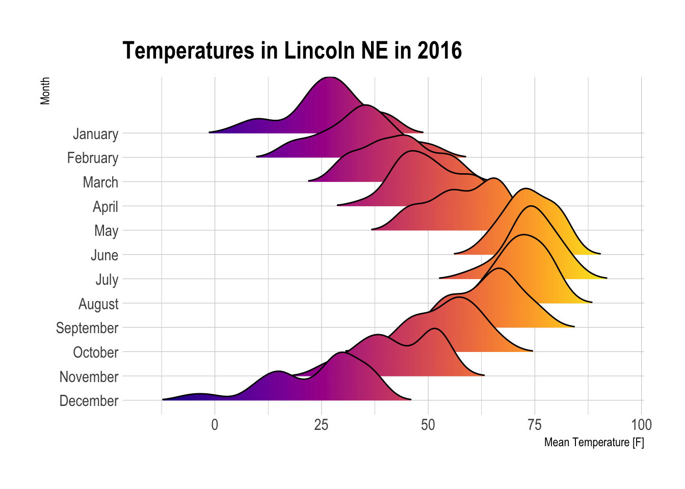

The best way to read the textbook is to do some of the exercises. I expect you to spend 6 to 9 hours doing so outside of class each week. This is based on the popular rule of thumb that three class hours implies six to nine study hours.
Let’s look at some of the Chapter 1 exercises briefly.
2.2 Textbook Section 1.1, An Example Experiment (stents)
Here we looked at treatment groups and control groups.
2.2.1 Textbook Exercise 1.1, the migraine data set
In class we loaded the data set and made a contingency table, with which we can answer the four questions in Exercise 1.1.
group
pain_free control treatment
no 44 33
yes 2 10
The four questions are:
What percent of patients in the treatment group were pain free 24 hours after receiving acupuncture?
What percent were pain free in the control group?
In which group did a higher percent of patients become pain free 24 hours after receiving acupuncture?
Your findings so far might suggest that acupuncture is an effective treatment for migraines for all people who suffer from migraines. However, this is not the only possible conclusion that can be drawn based on your findings so far. What is one other possible explanation for the observed difference between the percentages of patients that are pain free 24 hours after receiving acupuncture in the two groups?
We can use the tbl object we created to answer these questions.
The percentage of patients in the treatment group who were pain free was 23.3%.
The percentage of patients in the control group who were pain free was 4.3%.
A higher percent of the treatment group became pain free.
Not all migraine headaches are alike. It is possible that, due to chance, the patients in the treatment group had less severe migraine headaches that were easier to cure.
Examine the .qmd file that renders into this .html file. You’ll see that, rather than specify the numbers in the answers above, we actually did the calculations inline. What is good about doing this? (Hint: what happens if you add patients to the data set and rerender the document?) What is bad about doing this? (Hint: it looks clumsy and we could just as easily run the calculations in an r chunk, assign the results to object, and name the objects inline.)
Another issue is the code for part c. I only accounted for the case where the treatment group has the greater percent. It would be much better to add an else clause to account for the possibility that the answer should be control and an else to account for the two to be equal. The best way to do that is to create a non-echoing chunk and use the results inline. For example, the following chunk only appears in the .qmd file, not the .html file, but its results can be used inline.
Now we can say that the treatment group had the higher percentage. Only one problem remains and it is a software engineering problem. We haven’t tested the above code on a case where the control group or neither group had the higher percentages. We’ll leave that for now as a more advanced topic.
2.3 Textbook Section 1.2, Data Basics
Here we looked at
observations (rows), variables (columns), and data matrices (data frames)
types of variables (dbl or continuous, int or discrete, fctr or nominal, and ordered fctr or ordinal)
relationships between variables
explanatory (x or features or input) and response (y or targets or output) variables
observational studies and experiments (and we mentioned an in-between activity called quasi-experiments)
Data Type terminology: R vs the Textbook
R
Openintro Stats textbook
dbl, as.numeric()
numerical, continuous
int, as.integer()
numerical, discrete
fctr, factor()
categorical, nominal
ord, ordered()
categorical, ordinal
On the left of the above table, you see how R refers to data types. On the right is how the OpenIntro Stats textbook refers to data types. When you display a tibble (a tibble is a data frame with some extra information) using R, each variable column will be headed with dbl, int, fctr, or ord to indicate the four kinds of numbers. If a variable is not interpreted as a number, R will display chr as an abbreviation of character.
2.3.1 Textbook Exercise 1.7
What were the explanatory and response variables in the migraine study? The group was explanatory and pain_free was the response variable.
2.3.2 Textbook Exercise 1.12
This is a hard question in two parts.
List the variables used in creating this visualization.
Indicate whether each variable in the study is numerical or categorical. If numerical, identify as contin- uous or discrete. If categorical, indicate if the variable is ordinal.
There is actually an r package underlying this question. If you visit https://github.com/dgrtwo/unvotes you will see the data represented as a tibble. If you recall, during week one we said that a tibble is a data frame that behaves well. Among its features is a list of the data types, so you can answer parts a and b by looking at a tibble of the data, where you’ll see that
year is stored as dbl although it is really discrete and could be stored as int
country is stored as chr which means characters although it is really a nominal factor
percent_yes is stored as a dbl which is appropriate
issue is stored as chr although it is really a nominal factor
Later we’ll learn how to produce a visualization like this, although you are welcome to try based on the code at the unvotes website mentioned above. If you want the actual code itself, you can slightly modify the code at https://rpubs.com/minebocek/unvotes to include Mexico.
2.4 Textbook Section 1.3, Sampling
Here we talked about random sampling, stratified sampling, cluster sampling, and observational studies.
2.4.1 Textbook Exercise 1.15, Asthma
What is the population of interest and the sample? Note that the population is NOT all asthma sufferers. The population of interest is all asthma patients aged 18-69 who rely on medication for asthma treatment. The sample consists of 600 such patients.
Is the study generalizable? Can we establish cause and effect? The patients are probably not randomly sampled, so we need to know more to say whether they represent all asthma patients 18–69 who rely on medication. For example, they could all be from a high-pollution city. We would need to know that. The cause and effect determination is easier. An experiment can determine cause and effect, while an observational study only determines association.
2.5 Textbook Section 1.4, Experiments
Here we discussed four issues:
control
randomization
replication
blocking
2.5.1 Textbook Exercise 1.34, Exercise and mental health
A researcher is interested in the effects of exercise on mental health and he proposes the following study: Use stratified random sampling to ensure representative proportions of 18-30, 31-40 and 41-55 year olds from the population. Next, randomly assign half the subjects from each age group to exercise twice a week, and instruct the rest not to exercise. Conduct a mental health exam at the beginning and at the end of the study, and compare the results.
What type of study is this?
What are the treatment and control groups in this study?
Does this study make use of blocking? If so, what is the blocking variable?
Does this study make use of blinding?
Comment on whether or not the results of the study can be used to establish a causal relationship between exercise and mental health, and indicate whether or not the conclusions can be generalized to the population at large.
Suppose you are given the task of determining if this proposed study should get funding. Would you have any reservations about the study proposal?
2.5.2 Answers
This is an experiment.
The treatment is exercise twice a week and control is no exercise.
Yes, the blocking variable is age.
No, the study is not blinded since the patients will know whether or not they are exercising.
Since this is an experiment, we can make a causal statement. Since the sample is random, the causal statement can be generalized to the population at large. However, we should be cautious about making a causal statement because of a possible placebo effect.
It would be very difficult, if not impossible, to successfully conduct this study since randomly sampled people cannot be required to participate in a clinical trial
2.6 Textbook Chapter 2: Summarizing data
This week, we’ll look at numerical data, categorical data, and a case study.
2.6.1 Numerical data
There are graphical and numerical methods for summarizing numerical data, including
scatterplots
dot plots
mean
histograms
variance and standard deviation
box plots, quartiles, and the median
robust statistics
cartographic maps and cartograms
We can draw a scatterplot of two variables of the loan50 data as follows.
The above is a very basic scatterplot. Later, we’ll learn to change colors, background, labels, legends, and more. Bear in mind that the scatterplot is meant to compare two numeric variables. You can’t use it for a numeric variable and a categorical variable.
A dotplot may be helpful to illustrate a categorical variable, but I seldom use them. Using them in concert with a boxplot may make more sense. We’ll look at boxplots later.
The mean is part of a good summary of data. We can find the mean of a variable by saying mean(variable_name) or as part of a summary. For instance
with(loan50,mean(annual_income))
[1] 86170
with(loan50,summary(annual_income))
Min. 1st Qu. Median Mean 3rd Qu. Max.
28800 55750 74000 86170 99500 325000
Notice that the summary() function also gives us the minimum, the first quartile, the median, the 3rd quartile, and the maximum value of the variable, in addition to the mean. We’ll discuss all these statistics in the context of other ways to extract them. The problem with the mean that is demonstrated in the textbook is that two variables may have very different shapes but the same mean. So the textbook then describes histograms, which are a good way to identify the shape of a variable.
Notice that the x-axis labels are shown in scientific notation. We can fix this using the scales package. By the way, in case I haven’t mentioned it before, we always refer to the horizontal axis as the x-axis and the vertical axis as the y-axis. This is the default for r and many other languages that create graphical displays.
You may have noticed that Hadley Wickham, the inventor of the Tidyverse, dislikes the default number of bins in a histogram. So he programmed ggplot() to always show a warning message saying to pick a better number, depending on your data. We can fix that easily with a parameter to geom_histogram(). Then each bin (vertical stripe) will represent a thousand dollars.
You may notice that warning messages aren’t dealbreakers. An error message on the other hand, will often stop output dead in its tracks.
The next concepts covered in the textbook are variance and standard deviation. We can calculate them as follows. When you do this, you may notice that sd() is the square root of var(). Why would you prefer one over the other? Usually you use sd() because it’s in the same units as the data, dollars in the following case, unlike var(), which is in squared units, squared dollars in the following case.
with(loan50,var(annual_income))
[1] 3e+09
with(loan50,sd(annual_income))
[1] 57566
Together, the mean and standard deviation are often a good, yet compact, description of a data set.
You may want to find the means of all the columns in a data set. If you try to do that with the colMeans() function, you’ll get an error message as follows. (Actually, I’ve disabled the following code chunk by saying #| eval: false in the .qmd file because otherwise the rendering would halt.)
colMeans(loan50)
The remedy is to use a logical function to identify only the numeric columns.
Notice that you often wrap a function inside another function. The only problem is that it’s easy to lose track of all the parentheses.
The next topic in the textbook is the box plot. This also gives an opportunity to talk about the quartiles and the median. We can display a box plot as follows.
The thick line in the middle of the box is the median, the middle value of the data set. The box itself is bound by the first and third quartiles, known as hinges. The full name of this construct is actually a box and whiskers plot and the lines extending horizontally from the box are called whiskers. The upper whisker extends from the hinge to the largest value no further than 1.5 * IQR from the hinge (where IQR is the inter-quartile range, or distance between the first and third quartiles). The lower whisker extends from the hinge to the smallest value at most 1.5 * IQR of the hinge. Data beyond the end of the whiskers are called “outlying” points and are plotted individually.
We often want to create several box plots and compare them. This is easy to do as follows.
The textbook’s next topic is Robust Statistics and we’re going to pretty much skip that for now, except to say that outliers, as shown in the textbook, can affect the value of some statistics more than others. The mean and median are a good example. The median is much more robust to outliers than is the mean, which can be dragged way up or down by the presence of just one or a few outliers, whereas the median can not. As a kind of thought experiment, consider the following data set and the addition of an outlier and the effect of the outlier on the mean and median.
x<-c(2,3,3,3,4,4,4,5,5,6,6)mean(x)
[1] 4
median(x)
[1] 4
y<-c(2,3,3,3,4,4,4,5,5,6,6,800)mean(y)
[1] 70
median(y)
[1] 4
2.7 Uncertainty in summaries
How can we portray our uncertainty about estimates of parameters? Consider two different vectors:
u <-c(1,2,3,4,5,6,7,8,9)v <-c(3,4,5,5,5,5,5,6,7)
Suppose that these are samples from two different populations. For both of these vectors, the best estimate is 5. Both the mean and median are 5 in both cases. But when estimating, we’re much more sure of our estimate in the case of v than u. We quantify that with variance or its square root, standard deviation. But those numbers don’t mean much to most people. It’s easier to portray uncertainty graphically than numerically. The typical ways to do so are to make boxplots, violin plots, or barcharts with error bars if we’re comparing two or more groups. If we are estimating a continuous variable, say \(y\), at many different values of \(x\), we can show our uncertainty by estimating standard deviation for portions of the data and putting them together as follows in an example from the R Graph Gallery.
Notice that the confidence interval is narrower at the center than at the extremes. Why? It’s because we’re using more data to estimate at the center and have less uncertainty at the center than at the ends, where the data is truncated.
Suppose we’re doing something even more sophisticated, such as comparing groups of continuous \(y\) variables. A ridgeline plot is a popular solution to show variability, which is often similar to uncertainty, as shown in this example from the R Graph Gallery.
#. packagespacman::p_load(ggridges)pacman::p_load(viridis)#. Plotggplot(lincoln_weather, aes(x =`Mean Temperature [F]`, y =`Month`, fill = ..x..)) +geom_density_ridges_gradient(scale =3, rel_min_height =0.01) +scale_fill_viridis(name ="Temp. [F]", option ="C") +labs(title ='Temperatures in Lincoln NE in 2016') +theme_ipsum() +theme(legend.position="none",panel.spacing =unit(0.1, "lines"),strip.text.x =element_text(size =8) )
Warning: The dot-dot notation (`..x..`) was deprecated in ggplot2 3.4.0.
ℹ Please use `after_stat(x)` instead.

Not only are the temperatures higher in the summer than in the winter, they are less variable, so we’re more certain of what the temperature might be on any given day in summer.
2.8 Categorical Data
We’ve already seen contingency tables and how to manipulate them, which are introduced in more detail in this section. We’ve also seen a mosaic plot. Another kind of plot introduced in this section is the bar plot. We’ll examine each of these.
load(paste0(Sys.getenv("STATS_DATA_DIR"),"/migraine.rda"))tbl <-with(migraine,table(pain_free,group))tbl <-addmargins(tbl)pacman::p_load(kableExtra)tbl |>kbl() |>kable_classic(full_width=F) |>row_spec(3, color ="white", background ="#AAAAAA") |>column_spec(4, color ="white", background ="#AAAAAA") |>column_spec(1, color ="black", background ="white")
The above looks better but is misleading because it implies an ordinal relationship between the loan purposes and there is no such relationship. We would be better of specifying that the loan_purpose variable is qualitative.
I find the above palette to be ugly but several others are available. Google colorbrewer for more info. By the way, these colors have been extensively psychologically tested to verify that people can easily distinguish between them. I’m uncertain about colorblind people because the most prevalent form of color blindness is red-green.
Now remove the 10th through 85th observations. What is the range, mean, and standard deviation of each predictor in the subset of the data that remains?
Several functions allow you to check up on many columns at once. This is especially helpful in examining dataframes with large numbers of columns, such as amesHousing2011.csv.
$MSSubClass
020 030 040 045 050 060 070 075 080 085 090 120 150 160 180 190
1078 139 6 18 287 571 128 23 118 48 109 192 1 129 17 61
$MSZoning
A (agr) C (all) FV I (all) RH RL RM
2 25 139 2 27 2268 462
$Street
Grvl Pave
12 2913
$Alley
Grvl Pave
120 78
$LotShape
IR1 IR2 IR3 Reg
975 76 15 1859
$LandContour
Bnk HLS Low Lvl
114 120 60 2631
$Utilities
AllPub NoSeWa NoSewr
2922 1 2
$LotConfig
Corner CulDSac FR2 FR3 Inside
508 180 85 14 2138
$LandSlope
Gtl Mod Sev
2784 125 16
$Neighborhood
Blmngtn Blueste BrDale BrkSide ClearCr CollgCr Crawfor Edwards Gilbert Greens
28 10 30 108 44 267 103 191 165 8
GrnHill IDOTRR Landmrk MeadowV Mitchel NAmes NoRidge NPkVill NridgHt NWAmes
2 93 1 37 114 443 69 23 166 131
OldTown Sawyer SawyerW Somerst StoneBr SWISU Timber Veenker
239 151 125 182 51 48 72 24
$Condition1
Artery Feedr Norm PosA PosN RRAe RRAn RRNe RRNn
92 163 2519 20 38 28 50 6 9
$Condition2
Artery Feedr Norm PosA PosN RRAe RRAn RRNn
5 13 2896 4 3 1 1 2
$BldgType
1Fam 2fmCon Duplex Twnhs TwnhsE
2420 62 109 101 233
$HouseStyle
1.5Fin 1.5Unf 1Story 2.5Fin 2.5Unf 2Story SFoyer SLvl
314 19 1480 8 24 869 83 128
$RoofStyle
Flat Gable Gambrel Hip Mansard Shed
20 2320 22 547 11 5
$RoofMatl
CompShg Membran Metal Roll Tar&Grv WdShake WdShngl
2884 1 1 1 23 9 6
$Exterior1st
AsbShng AsphShn BrkComm BrkFace CBlock CemntBd HdBoard ImStucc MetalSd Plywood
44 2 6 88 2 124 441 1 450 221
PreCast Stone Stucco VinylSd Wd Sdng WdShing
1 2 42 1026 419 56
$Exterior2nd
AsbShng AsphShn Brk Cmn BrkFace CBlock CmentBd HdBoard ImStucc MetalSd Other
38 4 22 47 3 124 405 14 447 1
Plywood PreCast Stone Stucco VinylSd Wd Sdng Wd Shng
274 1 6 46 1015 397 81
$MasVnrType
BrkCmn BrkFace CBlock None Stone
25 879 1 1751 246
$ExterQual
Ex Fa Gd TA
103 35 988 1799
$ExterCond
Ex Fa Gd Po TA
12 67 299 3 2544
$Foundation
BrkTil CBlock PConc Slab Stone Wood
311 1244 1305 49 11 5
$BsmtQual
Ex Fa Gd Po TA
253 88 1219 2 1283
$BsmtCond
Ex Fa Gd Po TA
3 104 122 5 2611
$BsmtExposure
Av Gd Mn No
417 280 239 1906
$BsmtFinType1
ALQ BLQ GLQ LwQ Rec Unf
429 269 854 154 288 851
$BsmtFinType2
ALQ BLQ GLQ LwQ Rec Unf
53 68 34 89 106 2494
$Heating
Floor GasA GasW Grav OthW Wall
1 2880 27 9 2 6
$HeatingQC
Ex Fa Gd Po TA
1490 92 476 3 864
$CentralAir
N Y
196 2729
$Electrical
FuseA FuseF FuseP Mix SBrkr
188 50 8 1 2677
$KitchenQual
Ex Fa Gd Po TA
200 70 1160 1 1494
$Functional
Maj1 Maj2 Min1 Min2 Mod Sal Sev Typ
19 9 65 70 35 2 2 2723
$FireplaceQu
Ex Fa Gd Po TA
42 75 741 46 599
$GarageType
2Types Attchd Basment BuiltIn CarPort Detchd
23 1727 36 185 15 782
$GarageFinish
Fin RFn Unf
723 812 1231
$GarageQual
Ex Fa Gd Po TA
3 124 24 5 2610
$GarageCond
Ex Fa Gd Po TA
3 74 15 14 2660
$PavedDrive
N P Y
216 62 2647
$PoolQC
Ex Fa Gd TA
3 2 3 3
$Fence
GdPrv GdWo MnPrv MnWw
118 112 329 12
$MiscFeature
Gar2 Othr Shed TenC
5 4 95 1
$SaleType
COD Con ConLD ConLI ConLw CWD New Oth VWD WD
87 5 26 9 8 12 236 7 1 2534
$SaleCondition
Abnorml AdjLand Alloca Family Normal Partial
189 12 24 46 2412 242
df |>select(where(is.numeric)) |>map ( summary )
$LotFrontage
Min. 1st Qu. Median Mean 3rd Qu. Max. NA's
21 58 68 69 80 313 490
$LotArea
Min. 1st Qu. Median Mean 3rd Qu. Max.
1300 7438 9428 10104 11515 215245
$OverallQual
Min. 1st Qu. Median Mean 3rd Qu. Max.
1 5 6 6 7 10
$OverallCond
Min. 1st Qu. Median Mean 3rd Qu. Max.
1 5 5 6 6 9
$YearBuilt
Min. 1st Qu. Median Mean 3rd Qu. Max.
1872 1954 1973 1971 2001 2010
$`YearRemod/Add`
Min. 1st Qu. Median Mean 3rd Qu. Max.
1950 1965 1993 1984 2004 2010
$MasVnrArea
Min. 1st Qu. Median Mean 3rd Qu. Max. NA's
0 0 0 101 164 1600 23
$BsmtFinSF1
Min. 1st Qu. Median Mean 3rd Qu. Max. NA's
0 0 370 438 733 2288 1
$BsmtFinSF2
Min. 1st Qu. Median Mean 3rd Qu. Max. NA's
0 0 0 50 0 1526 1
$BsmtUnfSF
Min. 1st Qu. Median Mean 3rd Qu. Max. NA's
0 219 464 559 801 2336 1
$TotalBsmtSF
Min. 1st Qu. Median Mean 3rd Qu. Max. NA's
0 793 990 1047 1299 3206 1
$`1stFlrSF`
Min. 1st Qu. Median Mean 3rd Qu. Max.
334 876 1082 1155 1383 3820
$`2ndFlrSF`
Min. 1st Qu. Median Mean 3rd Qu. Max.
0 0 0 334 702 1862
$LowQualFinSF
Min. 1st Qu. Median Mean 3rd Qu. Max.
0 0 0 5 0 1064
$GrLivArea
Min. 1st Qu. Median Mean 3rd Qu. Max.
334 1126 1441 1494 1740 3820
$BsmtFullBath
Min. 1st Qu. Median Mean 3rd Qu. Max. NA's
0.0 0.0 0.0 0.4 1.0 3.0 2
$BsmtHalfBath
Min. 1st Qu. Median Mean 3rd Qu. Max. NA's
0.0 0.0 0.0 0.1 0.0 2.0 2
$FullBath
Min. 1st Qu. Median Mean 3rd Qu. Max.
0 1 2 2 2 4
$HalfBath
Min. 1st Qu. Median Mean 3rd Qu. Max.
0.0 0.0 0.0 0.4 1.0 2.0
$BedroomAbvGr
Min. 1st Qu. Median Mean 3rd Qu. Max.
0 2 3 3 3 8
$KitchenAbvGr
Min. 1st Qu. Median Mean 3rd Qu. Max.
0 1 1 1 1 3
$TotRmsAbvGrd
Min. 1st Qu. Median Mean 3rd Qu. Max.
2 5 6 6 7 14
$Fireplaces
Min. 1st Qu. Median Mean 3rd Qu. Max.
0 0 1 1 1 4
$GarageYrBlt
Min. 1st Qu. Median Mean 3rd Qu. Max. NA's
1895 1960 1979 1978 2002 2207 159
$GarageCars
Min. 1st Qu. Median Mean 3rd Qu. Max. NA's
0 1 2 2 2 5 1
$GarageArea
Min. 1st Qu. Median Mean 3rd Qu. Max. NA's
0 320 480 472 576 1488 1
$WoodDeckSF
Min. 1st Qu. Median Mean 3rd Qu. Max.
0 0 0 93 168 1424
$OpenPorchSF
Min. 1st Qu. Median Mean 3rd Qu. Max.
0 0 27 47 70 742
$EnclosedPorch
Min. 1st Qu. Median Mean 3rd Qu. Max.
0 0 0 23 0 1012
$`3SsnPorch`
Min. 1st Qu. Median Mean 3rd Qu. Max.
0 0 0 3 0 508
$ScreenPorch
Min. 1st Qu. Median Mean 3rd Qu. Max.
0 0 0 16 0 576
$PoolArea
Min. 1st Qu. Median Mean 3rd Qu. Max.
0 0 0 2 0 800
$MiscVal
Min. 1st Qu. Median Mean 3rd Qu. Max.
0 0 0 45 0 15500
$MoSold
Min. 1st Qu. Median Mean 3rd Qu. Max.
1 4 6 6 8 12
$YrSold
Min. 1st Qu. Median Mean 3rd Qu. Max.
2006 2007 2008 2008 2009 2010
$SalePrice
Min. 1st Qu. Median Mean 3rd Qu. Max.
12789 129500 160000 180412 213500 625000
Using the above functions would let you quickly and easily to determine that you should delete some columns and convert others to factor or integer. You can delete columns by saying, for instance,
df <- df |>select(-c("Order","PID"))
You may add as many names to the list in the -c() vector as desired.
You may wish to delete columns with a lot of NAs rather than deleting rows with lots of NAs. (Why is this?)
This is easy to discover in the case of numerical columns. For instance, LotFrontage has 490 NAs. You can quickly see that in the output of the above summary. But it doesn’t work for character data. One quick way to see the number of NAs in all columns is to say
Create a Quarto document called week02exercises.qmd. Use your name as the author name and the date as the current date. Make the title within the document “Week 2 Exercises”.
Answer the following questions in the document, using a combination of narration and R chunks.
Use the loan50 data set. Find the mean and median of annual_income using R. Tell why they differ in words.
Use the loan50 data set. Make a contingency table of loan_purpose and grade. Tell the most frequently occurring grade and most frequently occurring loan purpose in words.
Use the loan50 data set. Provide a statistical summary of total_credit_limit.
Use the loan50 data set. Show the column means for all numeric columns.
Use the loan50 data set. Make a contingency table of state and homeownership. Tell which state has the most mortgages in words.
Now render the document and submit both the .qmd file and the .html file to Canvas under “week02exercises”.
2.9.4 Solutions to exercises
Use the loan50 data set. Find the mean and median of annual_income using R. Tell why they differ in words.
They differ because the mean is susceptible to outliers. There are about four outliers in this data set (high annual incomes) and they drag the mean upward but not the median. The median is a more reliable measure of centrality when there are influential outliers.
Use the loan50 data set. Make a contingency table of loan_purpose and grade. Tell the most frequently occurring grade and most frequently occurring loan purpose in words.
#. same info with commas in numbersloan50 |>summarise(Min=comma(min(total_credit_limit)),firstq=comma(quantile(total_credit_limit,0.25)),Median=comma(median(total_credit_limit)),Mean=comma(mean(total_credit_limit)),thirdq=comma(quantile(total_credit_limit,0.75)),Max=comma(max(total_credit_limit)))
Min firstq Median Mean thirdq Max
1 15,980 70,526 147,364 208,547 299,766 793,009
Use the loan50 data set. Show the column means for all numeric columns.
Use the loan50 data set. Make a contingency table of state and homeownership. Tell which state has the most mortgages in words.
with(loan50,table(state,homeownership))
homeownership
state rent mortgage own
0 0 0
AK 0 0 0
AL 0 0 0
AR 0 0 0
AZ 0 0 1
CA 7 2 0
CO 0 0 0
CT 1 0 0
DC 0 0 0
DE 0 0 0
FL 1 2 0
GA 0 0 0
HI 1 1 0
ID 0 0 0
IL 3 0 1
IN 0 1 1
KS 0 0 0
KY 0 0 0
LA 0 0 0
MA 1 1 0
MD 2 1 0
ME 0 0 0
MI 0 1 0
MN 0 1 0
MO 0 1 0
MS 0 1 0
MT 0 0 0
NC 0 0 0
ND 0 0 0
NE 0 1 0
NH 1 0 0
NJ 2 1 0
NM 0 0 0
NV 0 2 0
NY 1 0 0
OH 0 1 0
OK 0 0 0
OR 0 0 0
PA 0 0 0
RI 0 1 0
SC 0 1 0
SD 0 0 0
TN 0 0 0
TX 0 5 0
UT 0 0 0
VA 1 0 0
VT 0 0 0
WA 0 0 0
WI 0 1 0
WV 0 1 0
WY 0 0 0
Texas has five mortgages, more than any other state.
2.9.5 Exercise Notes
Many students did not follow instructions on file naming. I will take off a lot of points if this happens when you turn in a graded assignment. I expect all files to be uniformly named.
Several students left the boilerplate verbiage in their .qmd file. I will take off a lot of points if this happens when you turn in a graded assignment.
One student put their narrative inside the code chunks as R comments. Don’t do this. It undercuts the purpose of mixing narrative and code in a Quarto document.
Some students didn’t try to answer the second part of question 1. One way to understand this is to draw a boxplot of the data, showing that there are four outliers at the top end, dragging the mean upward but leaving the median pretty much alone.
Some students included graphics, which don’t show up in the copy on Canvas. One way to make these graphics show up is to add the following code to the front matter (the front matter is the stuff between two sets of three dashes at the beginning of the file):
format:
html:
embed-resources: true
The indentation shown above is essential for it to work.
Some students highlighted relevant rows and columns as shown below. This was a really great addition.
tbl <-with(loan50,table(loan_purpose,grade))tbl <-addmargins(tbl)pacman::p_load(kableExtra)tbl |>kbl() |>kable_classic(full_width=F) |>row_spec(4, color ="white", background ="#AAAAAA") |>column_spec(4, color ="white", background ="#AAAAAA") |>column_spec(1, color ="black", background ="white")
Now you can plug maxrownum and maxcolnum into the formula without having to know which row and column you’re talking about.
tbl |>kbl() |>kable_classic(full_width=F) |>row_spec(maxrownum, color ="white", background ="#AAAAAA") |>column_spec(maxcolnum, color ="white", background ="#AAAAAA") |>column_spec(1, color ="black", background ="white")
A
B
C
D
E
F
G
Sum
0
0
0
0
0
0
0
0
0
car
0
0
1
1
0
0
0
0
2
credit_card
0
6
4
1
1
1
0
0
13
debt_consolidation
0
2
9
4
7
1
0
0
23
home_improvement
0
1
4
0
0
0
0
0
5
house
0
0
1
0
0
0
0
0
1
major_purchase
0
0
0
0
0
0
0
0
0
medical
0
0
0
0
0
0
0
0
0
moving
0
0
0
0
0
0
0
0
0
other
0
4
0
0
0
0
0
0
4
renewable_energy
0
1
0
0
0
0
0
0
1
small_business
0
1
0
0
0
0
0
0
1
vacation
0
0
0
0
0
0
0
0
0
wedding
0
0
0
0
0
0
0
0
0
Sum
0
15
19
6
8
2
0
0
50
And, in the narrative you can say that the maximum frequency of loan_purpose is 23. In the narrative you can alo say that the maximum frequency of grade is 19.
One student stipulated that the mean and median could not ever be the same except in two unusual circumstances. Actually it is quite easy for the mean to equal the mean as you can see from this simple example.